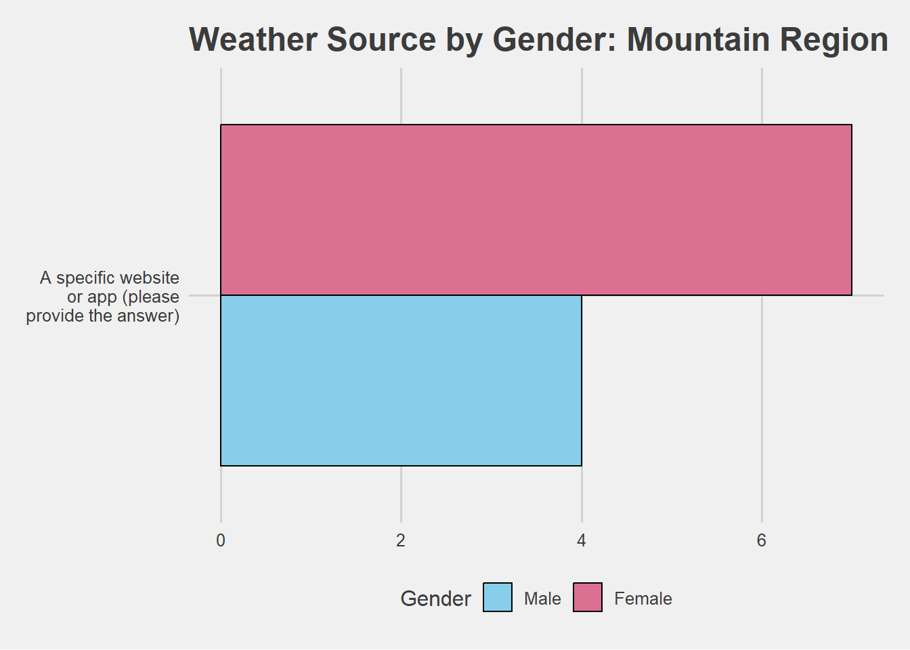

In April 2015, Walt Hickey at 538.com published an article entitled “Where People Go To Check The Weather”. This article utilized survey data collected from 928 people which asked questions on if they typically check the weather on a daily basis and if so, what source they used to check the weather. Additional follow-up questions were asked about which specific websites or apps they used and if they had a smartwatch if they would check the weather on that smartwatch.
The “weather check” dataset that was used for the “Where
People Go To Check The Weather” article, is available through the R
package fivethirtyeight.
Using this dataset, this article summarizes the weather source
preferences for the Mountain Region of the United States by gender.
For our summary presented here, a subset of the original weather check dataset was extracted to only include responses with no missing data and only included respondents from the Mountain region of the US. The data subset used for our summary had 11 respondents.
This section provides demographic summary tables for the 11 survey respondents.
| Category | % | Category | % | Category | % |
|---|---|---|---|---|---|
| 18 - 29 | 9.09 | FALSE | 36.36 | $0 to $9,999 | 0.00 |
| $200,000 and up | 0.00 | ||||
| Prefer not to answer | 27.27 | ||||
| 30 - 44 | 18.18 | TRUE | 63.64 | $10,000 to $24,999 | 0.00 |
| 45 - 59 | 27.27 | $25,000 to $49,999 | 27.27 | ||
| 60+ | 45.45 | $50,000 to $74,999 | 9.09 | ||
| $75,000 to $99,999 | 0.00 | ||||
| $100,000 to $124,999 | 27.27 | ||||
| $125,000 to $149,999 | 9.09 | ||||
| $150,000 to $174,999 | 0.00 | ||||
| $175,000 to $199,999 | 0.00 |
Finally, here is a breakdown of the 11 survey respondents for the Mountain region of the US on how they check their daily weather by gender.

Module 4 - Lesson: Create an R Package with an R Markdowm Template
R code used to setup and create an R package
setwd(“C:/RepTemplates”)
library(devtools)
devtools::create(“WCtemplatePackage”)
dir.create(“inst/rmarkdown/templates/weather/skeleton”, recursive = TRUE)
Text for “template/yaml”
name: Weather Check Report
R code to install package
devtools::install(“WCtemplatePackage”)
Text for the updated readme.md file - be sure to use your github account name instead of melindahiggins2001
This R package provides an R markdown template for creating a report
from the Weather Check dataset from the fivethirtyeight R
package.
To install the development version of this package from Github, you
may use the devtools package to run this R code
devtools::install_github('melindahiggins2001/WCtemplatePackage').
R code to install from Github - again use your Github account name instead of melindahiggins2001
devtools::install_github(‘melindahiggins2001/WCtemplatePackage’)